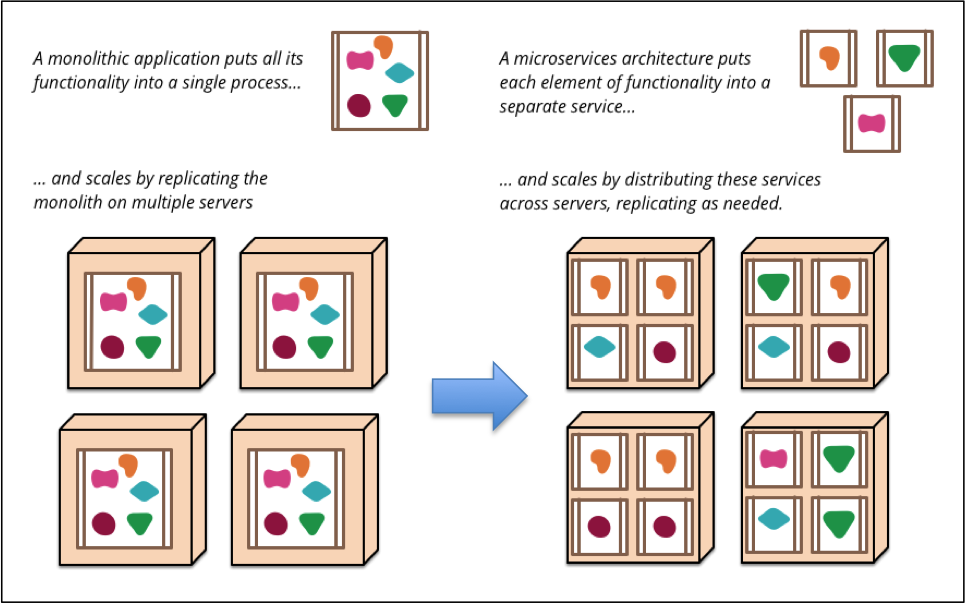
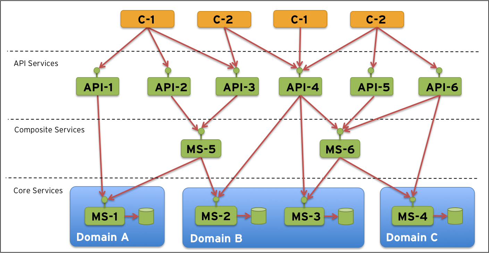
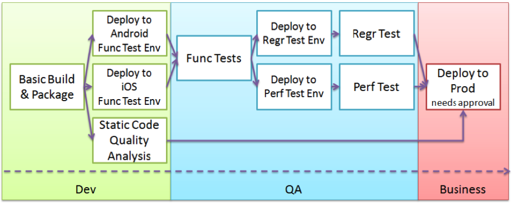
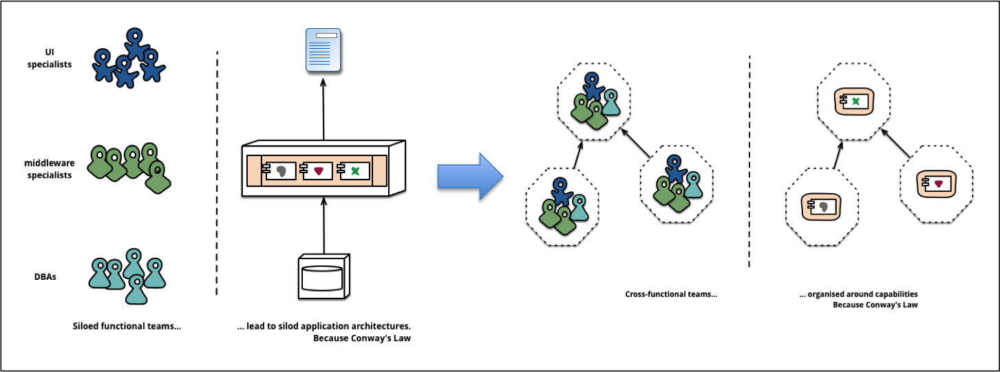

这里不仅仅是再次重复介绍一次微服务，有关微服务的介绍可以参考Fowler - Microservices.相反，这篇文章是基于我们已经开始使用微服务来分解我们的应用程序以期提高我们的应用的可部署下和可伸缩性。
当在系统环境中部署的微服务数量增加，单体式应用程序部署减少时，将遇到新的挑战，本文将重点关注这些新的挑战，并为使用大量微服务部署的系统环境定义操作模型。
本文将分为下面几个部分：
- 前提条件
- 扩大
- 问题
- 必须的组件
- 参考模型
1 前提条件
首先，在系统环境中使用大量微服务需要什么？
更具Fowler的博客中介绍，这是我们想要实现的目标：

Source: （http://martinfowler.com/articles/microservices.html)
但是，我们在我们的系统环境中大量使用微服务取代我们的单体式应用程序之前，需要满足一些先决条件（部分可能不是许）：
- 目标架构
- 一个持续的交付工具链
- 一个适当的组织
1.1 目标架构
首先，我们需要思考，我们如何划分所有微服务。例如我们可以在某些层中垂直划分我们的微服务：
- ‘核心服务’：处理业务数据的持久性并应用业务规则和其他逻辑
- ‘组合服务’：组合服务可以协调许多核心服务以执行常见任务或聚合来自多个核心服务的信息。
- ‘API服务’：暴露允许外部使用的功能，例如：在系统环境中使用的第三方提供的基础功能。
…横向，我们可以通过定义不同的域，然后根据不同的域进行分区。可形成类似下面的目标架构。

Note：这只是一个示例目标架构，您的架构可以完全不同。 这里的关键是，在开始扩展部署微服务之前，需要建立目标体系结构。 否则，您可能最终会进入一个看起来像一大碗意大利面条的系统环境（混乱不堪），其特性甚至比现有的单片应用程序更差。
1.2 持续的交付
我们还假设我们拥有某种连续交付工具链，以便我们能够以有效的可重复和质量驱动的方式推出我们的微服务，例如：

Source:（http://www.infoq.com/minibooks/emag-devops-toolchain)
1.3 组织
最后，我们假设我们采用我们的组织来避免康威定律的问题。 康威的法律规定：
Any organization that designs a system (defined broadly) will produce a design whose structure is a copy of the organization’s communication structure.

Source: (http://martinfowler.com/articles/microservices.html)
2 扩大
现在,提出本文关注的内容：
当我们开始拆分一些单片应用程序并用大量微服务替换它们时，系统环境会发生什么？
- ‘大量的部署单元’,许多小型微服务而不是几个大型的单片应用程序，这将导致需要管理和跟踪的部署单元数量显著增加。
- ‘微服务同时是服务提供者和服务消费者’，这将导致系统环境中大多数微服务相互连接，服务调用关系更加复杂。
- ‘一些微服务将暴露外部API’，这些微服务将负责屏蔽其他微服务免受外部访问
- ‘系统环境将更加动态’，新的微服务被部署，旧的微服务被替换或移除，已有的微服务的新实例被启动以满足不断增加的负载。 这意味着服务将以前所未有的频率更替（新增，移除、替换、追加实例）。
- ‘MTBF（平均故障间隔时间）将减少’,例如:故障将在系统环境中更频繁地发生,软件组件会不时出现故障。与仅具有少量大型单片应用程序的系统环境相比，大量小型部署单元的系统环境，系统环境中的某些部件（即使很小）发生故障的可能性将会增加。
3 问题
这将在某些情况下会出现导致一些重要的与运行时相关的新问题：
- ‘如何配置我的微服务并且它是否正确？’,处理配置不是少数应用程序的主要问题，例如 每个应用程序将自己的配置存储在磁盘上的属性文件或其自己的数据库中的配置表中。由于在多个服务器上的多个实例中部署了大量微服务，因此管理这种方法变得更加棘手。 这会导致很多小的配置文件/表遍布整个系统环境，很难以高效的方式保持良好的质量。
- ‘需要部署那些微服务，部署到哪里？’保持对少量应用程序主机和端口服务所显示的内容跟踪很简单，因为数量少且变化率低。由于大量的微服务彼此独立地部署，因此系统环境中会有或多或少的连续变化，如果手动处理，这很容易导致维护噩梦。
- ‘如果更新路由信息？‘在动态系统环境中成为服务的消费者也可能具有挑战性。 特别是如果需要手动更新路由表（例如反向代理或消费者配置文件）。
- ‘如何防止连锁异常？’由于微服务将彼此互连，因此需要特别注意以避免系统环境中出现连锁的故障链。例如。 如果一些微服务依赖到一个运行失败的微服务，依赖的微服务也可能会失败等等。 如果处理不当，系统环境的大部分服务可能会受到单点故障微服务的影响，从而导致系统环境变得脆弱。
- ‘如何验证所有服务是否已启动并正在运行？’跟踪少量的应用程序的状态相当容易，但我们如何验证所有微服务是否健康并准备好接收请求？
- ‘如何跟踪服务之间的消息流动？’如果支持组织开始收到有关某些处理失败的投诉怎么办？那个微服务是发生问题的根本原因呢？如何找出发生问题的处理呢？例如：订单号12345因为微服务A无法访问或需要在微服务B发送有关该订单的确认消息之前需要手动批准而被卡住了？
- ‘如何确保只有API服务被外部公开？’例如，如何避免未经授权的外部请求访问内部服务。
- ‘如何保护API服务？’不是新的也不是微服务特有的问题，但对于保护实际暴露在外部的微服务仍然非常重要。
4 必须的组件
为了解决上面的问题，我们需要一下新的操作和管理方法，但是，并不是每个系统都需要这些，比如在一下仅仅运行少量应用的系统环境中，可以选用需要的功能。针对上面提出的问题的解决方案包括下面组件：
- ‘中心配置服务’，我们需要集中管理配置的中心配置服务，以替代部署单个本地配置（每个服务一个配置）。我们也需要一个用于微服务取得配置信息的配置API接口。
- ‘服务发现服务’， 我们需要一个服务发现功能，使用服务发现服务替代手工跟踪部署了的微服务当前的主机、端口。通过一个API，微服务可以再启动时自己注册微服务。
- ‘动态路由和负载均衡’， 动态路由和负载均衡器提供服务发现功能。路由组件可以使用服务发现API查找需要请求的被发布的服务，负载均衡组件可决定那个实例会被用于请求，如果有多个实例被发布用于服务请求。
- ‘熔断器’,断路器为了避免故障链问题，我们需要应用断路器模式，有关详细信息，请参阅“Release It”一书！ 或者阅读博文Fowler - Circuit Breaker。